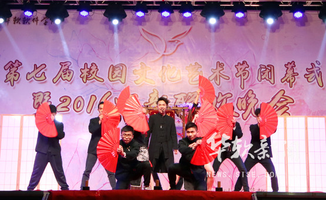
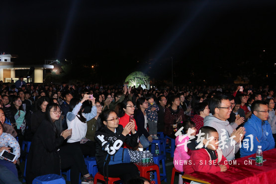
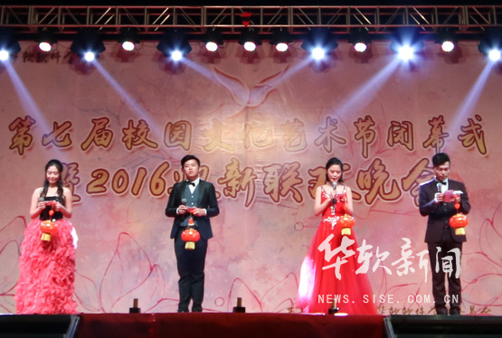
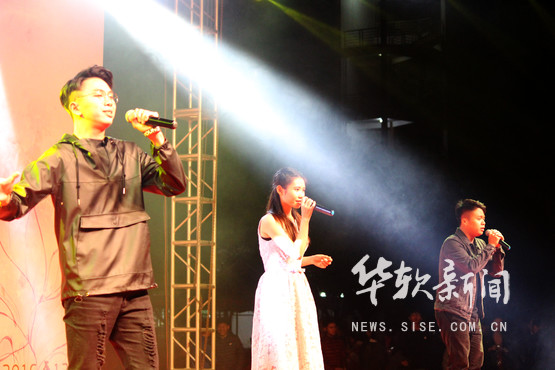
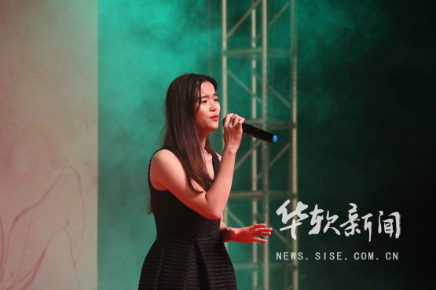
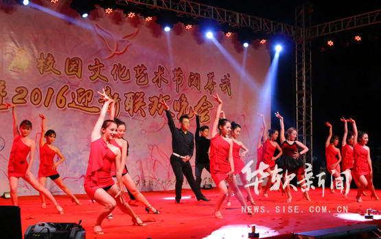
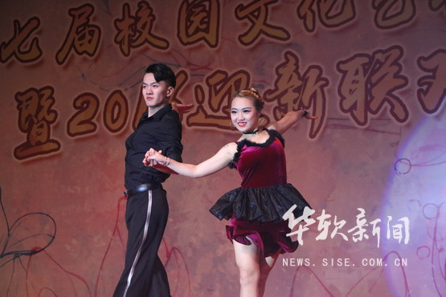
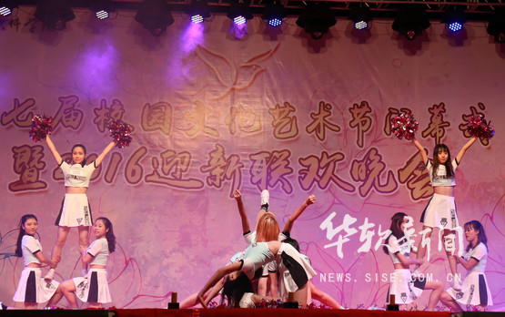
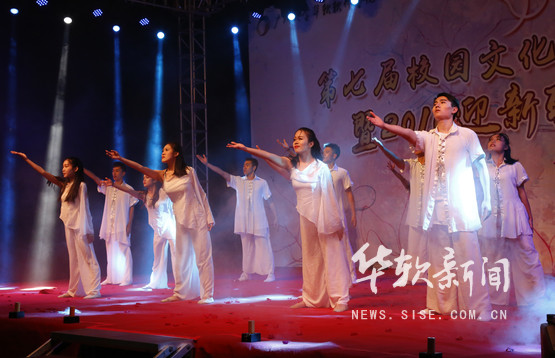
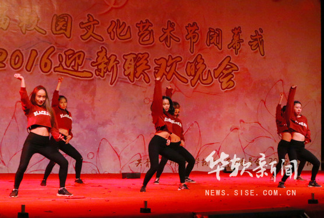

12月9日晚，华软学院举行第七届校园文化艺术节闭幕式暨2016迎新联欢晚会，晚会掀起了一股以“青春.梦想”为主题的热浪，为广大师生呈现了一场校园文化盛宴。学院党委张高峰副书记、党群工作部曾伟朝部长、学生处黄汉昌处长、学院团委张广金书记、各部门负责人、教师代表以及9大高校各位学生代表出席观看了晚会。
| 开场节目《玄武关：轮回》 |  | 观众席 |  |
| 主持人 |  | 好声音冠亚季军演出 |  |
| 好声音最佳台风奖演出《我的未来式》 |  | 拉丁队《人依旧，爱依然》热辣全场 |  |
| 拉丁队表演 |  | 拉拉队表演 |  |
| 民舞队演出《海那边》 |  | 女jazz队 |  |